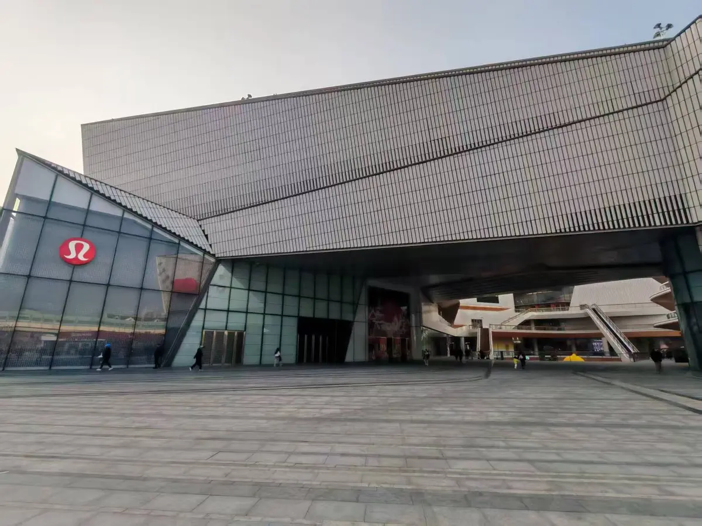
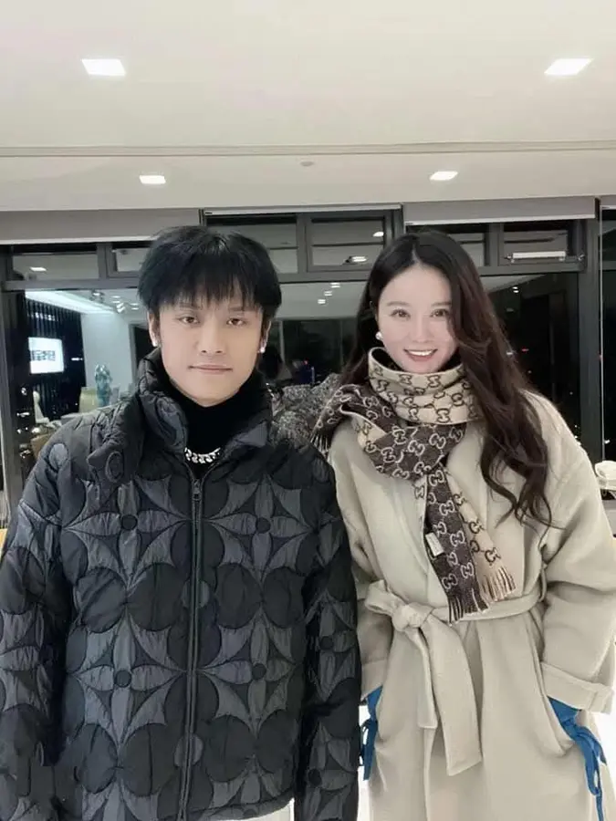
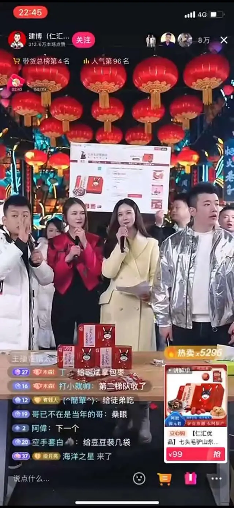

시장 조건부터 확인Market fit first先确认市场条件
제품과 채널의 적합성, 진입 조건, 우선순위를 정리합니다.Product–channel fit, entry conditions and priorities.梳理产品与渠道匹配度、准入条件及优先顺序。
CHINA MARKET ENTRY · LOCAL OPERATIONS
시장 검토와 진입 설계부터 현지 유통, 콘텐츠, 라이브커머스와 파트너 운영까지. 브랜드 상황에 맞는 실행 범위를 설계하고 현장에서 연결합니다.From market review and entry planning to local distribution, content, live commerce and partner operations—built around each brand's situation.从市场评估与进入规划，到本地流通、内容、直播电商及合作伙伴运营，根据品牌现状设计并执行。



ABOUT COREGATE
제품 카테고리, 준비 단계, 목표 채널과 예산 범위를 먼저 확인한 뒤 필요한 업무를 조합합니다. 보고서에 머무르지 않고 실제 파트너 협의와 현장 운영까지 이어지는 구조를 만듭니다.We first review product category, readiness, target channels and operating range, then build the right scope—from planning through local partner coordination and field execution.先确认产品类别、准备阶段、目标渠道及执行范围，再组合所需业务，并衔接至本地伙伴洽谈与现场执行。
제품과 채널의 적합성, 진입 조건, 우선순위를 정리합니다.Product–channel fit, entry conditions and priorities.梳理产品与渠道匹配度、准入条件及优先顺序。
필요한 파트너, 콘텐츠, 판매와 운영 범위를 구분합니다.Define partners, content, commerce and operations.明确合作伙伴、内容、销售及运营范围。
미팅과 행사 이후 실제 다음 단계가 이어지도록 관리합니다.Connect meetings and events with practical next steps.推动洽谈与活动后的实际下一步。
CAPABILITIES
단일 업무부터 복합 프로젝트까지 브랜드의 준비 단계에 맞춰 구성합니다.Built to match each brand's stage, from a single assignment to an integrated project.根据品牌准备阶段，可从单项业务扩展至综合项目。
제품과 시장의 적합성을 검토하고 우선 채널, 파트너 협의와 진입 범위를 정리합니다.Review market fit and define priority channels, partner discussions and entry scope.评估产品与市场匹配度，梳理优先渠道、伙伴洽谈与进入范围。
온라인·오프라인 판매 채널과 현지 유통 파트너를 연결하고 운영 범위를 조율합니다.Connect online and offline sales channels with local distribution operations.连接线上线下销售渠道与本地流通运营。
중국 플랫폼에 맞는 브랜드 콘텐츠와 인플루언서 협업을 프로젝트 단위로 운영합니다.Operate brand content and influencer collaboration for China platforms.针对中国平台运营品牌内容与达人合作项目。
한국에서 라이브커머스를 진행하고 중국 판매 채널, 주문과 유통을 연결합니다.Run live commerce in Korea and connect China sales, orders and distribution.在韩国开展直播电商，并衔接中国销售、订单与流通。
K-POP, 브랜드 체험과 현지 행사 운영을 결합해 소비자 접점을 구성합니다.Combine K-POP, brand experience and local event operations.结合K-POP、品牌体验与本地活动运营。
대학·교육기관의 인플루언서·도우인 실무 교육과 크리에이터 성장 프로그램을 운영합니다.Practical influencer and Douyin education with creator development programs.面向高校与教育机构开展达人、抖音实务教育及创作者成长项目。
WORKING PROCESS
필요한 범위만 분명하게 정하고, 각 단계의 판단이 다음 실행으로 이어지도록 관리합니다.A clear scope at every stage, with each decision connected to the next action.明确每个阶段所需范围，并让判断自然衔接至下一步执行。
제품, 목표 시장, 준비 상태와 필요한 업무를 확인합니다.Product, target market, readiness and required scope.确认产品、目标市场、准备状态与所需业务。
우선 채널과 현지 협업 구조를 정리합니다.Define priority channels and local collaboration structure.确定优先渠道与本地合作结构。
콘텐츠, 라이브커머스, 유통 또는 행사를 실행합니다.Execute content, live commerce, distribution or events.执行内容、直播电商、流通或活动。
현장 결과를 확인하고 다음 협의와 운영 범위를 정합니다.Review field results and define the next operating scope.确认现场结果并确定下一阶段运营范围。
REFERENCES
프로젝트별 배경, 수행 범위, 역할과 사진 기록을 상세 페이지에서 확인할 수 있습니다.Each detail page documents project background, scope, role and field photography.每个项目页面均记录背景、执行范围、角色及现场图片。
전체 레퍼런스All References全部项目案例 ↗
KOTRA 한·중 소비재 협력플라자에서 한국 소비재 브랜드의 중국 시장 상담, 현지 파트너 협의와 행사 이후의 실행 검토를 지원했습니다.Supported Korean consumer brands with China-market consultations, local partner discussions and post-event execution review at KOTRA’s Korea–China Consumer Goods Cooperation Plaza.在KOTRA中韩消费品合作广场，为韩国消费品牌提供中国市场咨询、本地合作洽谈及会后执行评估。

K-POP 경연 운영·주최와 K-브랜드 현장 협업을 준비하고 있습니다.Preparing K-POP competition operations and on-site K-brand collaboration.筹备K-POP竞演运营及K-品牌现场合作。
ROLE프로그램 운영 · 브랜드 협업Program · Brand Partnership项目运营 · 品牌合作프로젝트 보기View Project查看项目 ↘
중국 인플루언서·라이브커머스 팀과 콘텐츠 노출 및 판매 연계를 진행했습니다.Content exposure and sales collaboration with China influencers and live-commerce teams.与中国达人及直播电商团队开展内容曝光与销售合作。
ROLE협업 기획 · 현장 운영Planning · Field Operations合作策划 · 现场运营사례 보기View Case查看案例 ↘
국내 대학과 교육기관에서 중국 플랫폼·콘텐츠·라이브커머스 실무를 교육했습니다.Practical China-platform, content and live-commerce education for Korean institutions.面向韩国高校与教育机构开展中国平台、内容与直播电商实务培训。
ROLE커리큘럼 · 강의 운영Curriculum · Lectures课程设计 · 教学运营교육 사례 보기View Program查看课程 ↘INFLUENCER PRACTICE
중국 라이브커머스 협업과 국내 대학·교육기관의 실무 교육을 각각의 사례로 확인할 수 있습니다.Explore China live-commerce collaboration and practical programs for Korean universities and institutions.可分别查看中国直播电商合作及韩国高校、教育机构的实务教育案例。
중국 내 높은 인지도를 보유한 인플루언서·라이브커머스 팀과 브랜드 콘텐츠, 현장 방송, 제품 판매 연계를 진행해왔습니다.Brand content, live broadcasts and product sales developed with established influencers and live-commerce teams in China.携手中国具有广泛影响力的达人与直播电商团队，开展品牌内容、现场直播及产品销售合作。





국내 대학과 교육기관에서 글로벌 인플루언서 산업, 도우인 플랫폼과 중국 콘텐츠·라이브커머스 실무를 교육합니다.Practical education on the global influencer industry, Douyin, China content and live commerce for universities and training institutions in Korea.面向韩国高校及教育机构，开展全球达人产业、抖音平台、中国内容与直播电商实务培训。
크리에이터 발굴·교육, 브랜드 협업, 해외 채널 확장을 연결하는 인큐베이션 사업.Creator discovery, training, brand collaboration and overseas channel expansion.连接创作者发掘培训、品牌合作与海外渠道拓展的孵化业务。
LOCAL NETWORK
중국 현지 운영, 콘텐츠·미디어, 커머스·유통, 교육 분야의 프로젝트별 파트너 구성.Project-based partners across local operations, content, commerce and education.涵盖本地运营、内容媒体、商业流通及教育领域的项目型伙伴网络。
현지 실행과 운영 지원On-the-ground execution本地执行与运营支持
콘텐츠 기획과 미디어 협업Content and media collaboration内容策划与媒体合作
판매 채널과 유통 연계Sales and distribution links销售渠道与流通对接
전문 교육과 프로그램 협업Specialist programs and training专业教育与项目合作
CREATOR COMMERCE NETWORK
크리에이터·브랜드·커머스 파트너의 국가 간 협업을 위한 민간 네트워크. 이탈리아, 인도, 홍콩, 일본, 중국을 우선 연결합니다.A private cross-border network for creators, brands and commerce partners, initially connecting Italy, India, Hong Kong, Japan and China.面向创作者、品牌与商业伙伴的跨境民间网络，优先连接意大利、印度、香港、日本与中国。
BUSINESS INQUIRY
아래 정보를 함께 보내주시면 검토가 더 빠릅니다.Include the information below for a faster review.如能同时提供以下信息，可更快完成评估。